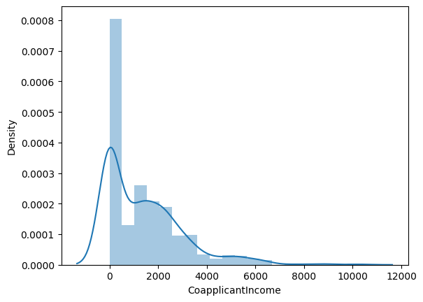
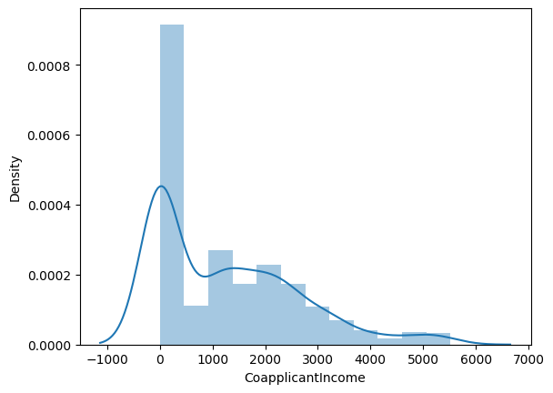
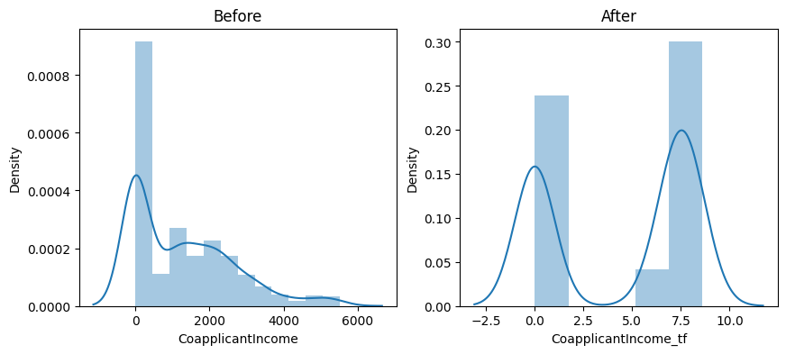
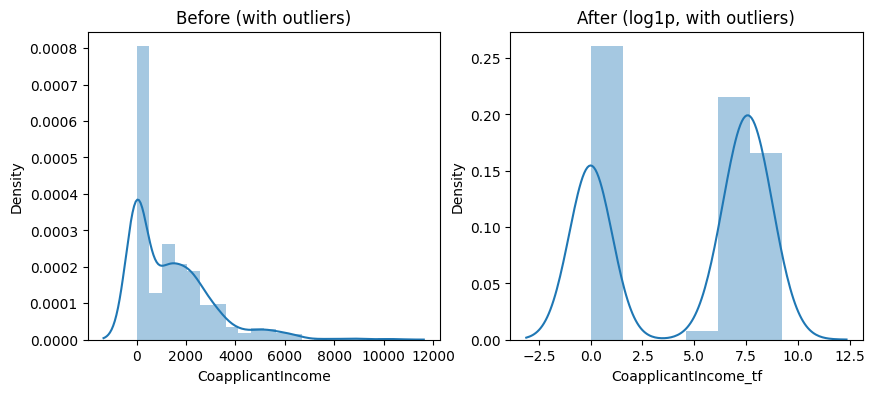
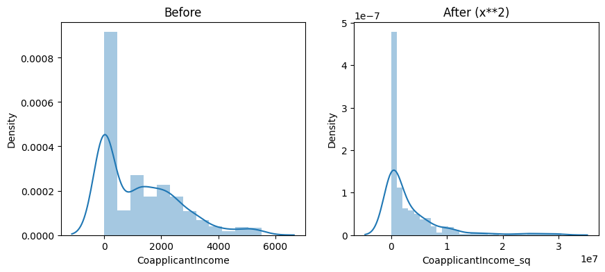
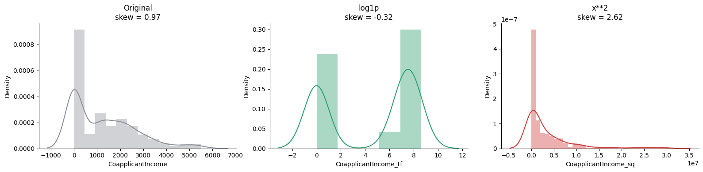
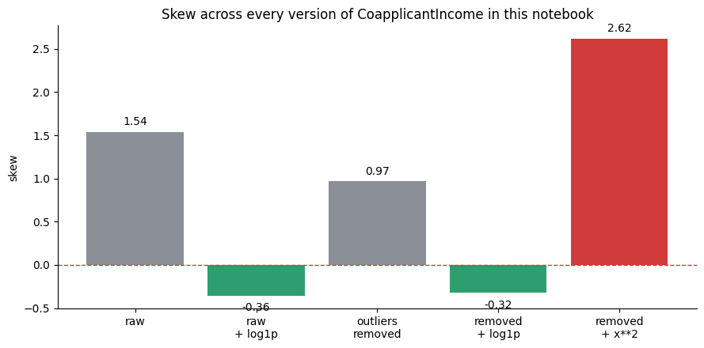

In [1]cell 1
import pandas as pd import seaborn as sns import matplotlib.pyplot as plt import numpy as np
In [2]cell 2
dataset = pd.read_csv("../../_shared_data/loans.csv")In [3]cell 3
dataset.isnull().sum()
Output
Loan_ID 0 Gender 13 Married 6 Dependents 15 Education 9 Self_Employed 32 ApplicantIncome 2 CoapplicantIncome 0 LoanAmount 22 Loan_Amount_Term 21 Credit_History 50 Property_Area 9 Loan_Status 0 dtype: int64
In [4]cell 5
sns.distplot(dataset["CoapplicantIncome"]) plt.show()
Output
/var/folders/07/ymtnct793nj_13sf3p9t0lqh0000gn/T/ipykernel_36888/1899262194.py:1: UserWarning: `distplot` is a deprecated function and will be removed in seaborn v0.14.0. Please adapt your code to use either `displot` (a figure-level function with similar flexibility) or `histplot` (an axes-level function for histograms). For a guide to updating your code to use the new functions, please see https://gist.github.com/mwaskom/de44147ed2974457ad6372750bbe5751 sns.distplot(dataset["CoapplicantIncome"])

In [5]cell 6
dataset["CoapplicantIncome"].skew()
Output
np.float64(1.5399420730801827)
In [6]cell 9
q1 = dataset["CoapplicantIncome"].quantile(0.25) q3 = dataset["CoapplicantIncome"].quantile(0.75) iqr = q3-q1 iqr
Output
np.float64(2217.75)
In [7]cell 10
min_r = q1-(1.5*iqr) max_r = q3+(1.5*iqr)
In [8]cell 11
min_r, max_r
Output
(np.float64(-3326.625), np.float64(5544.375))
In [9]cell 13
dataset = dataset[dataset["CoapplicantIncome"]<=max_r]
In [10]cell 14
dataset
Output
Loan_ID Gender Married Dependents Education Self_Employed \
0 LP001001 Male Yes 0 Not Graduate No
1 LP001002 Male Yes 0 Not Graduate No
2 LP001003 Female No 0 Graduate No
3 LP001004 Male Yes 0 Graduate No
4 LP001005 Male No 2 Graduate No
.. ... ... ... ... ... ...
613 LP001614 Female Yes 2 Graduate No
614 LP001615 Male Yes NaN Graduate No
615 LP001616 Male No 2 Graduate No
616 LP001617 Male Yes 0 Graduate No
617 LP001618 Male Yes 2 Not Graduate Yes
ApplicantIncome CoapplicantIncome LoanAmount Loan_Amount_Term \
0 1686.0 1020 80.0 360.0
1 2437.0 1201 122.0 360.0
2 8313.0 1065 319.0 360.0
3 5069.0 0 218.0 360.0
4 3002.0 2283 194.0 360.0
.. ... ... ... ...
613 3153.0 In [11]cell 15
sns.distplot(dataset["CoapplicantIncome"]) plt.show()
Output
/var/folders/07/ymtnct793nj_13sf3p9t0lqh0000gn/T/ipykernel_36888/1899262194.py:1: UserWarning: `distplot` is a deprecated function and will be removed in seaborn v0.14.0. Please adapt your code to use either `displot` (a figure-level function with similar flexibility) or `histplot` (an axes-level function for histograms). For a guide to updating your code to use the new functions, please see https://gist.github.com/mwaskom/de44147ed2974457ad6372750bbe5751 sns.distplot(dataset["CoapplicantIncome"])

In [12]cell 16
dataset["CoapplicantIncome"].skew()
Output
np.float64(0.9655444212412013)
In [13]cell 18
from sklearn.preprocessing import FunctionTransformer
In [14]cell 20
ft = FunctionTransformer(func=np.log1p) ft.fit(dataset["CoapplicantIncome"])
Output
FunctionTransformer(func=<ufunc 'log1p'>)
In [15]cell 21
dataset["CoapplicantIncome_tf"]=ft.transform(dataset["CoapplicantIncome"])
In [16]cell 22
plt.figure(figsize=(10,4))
plt.subplot(1,2,1)
sns.distplot(dataset["CoapplicantIncome"])
plt.title("Before")
plt.subplot(1,2,2)
sns.distplot(dataset["CoapplicantIncome_tf"])
plt.title("After")
plt.show()Output
/var/folders/07/ymtnct793nj_13sf3p9t0lqh0000gn/T/ipykernel_36888/1020236315.py:3: UserWarning: `distplot` is a deprecated function and will be removed in seaborn v0.14.0. Please adapt your code to use either `displot` (a figure-level function with similar flexibility) or `histplot` (an axes-level function for histograms). For a guide to updating your code to use the new functions, please see https://gist.github.com/mwaskom/de44147ed2974457ad6372750bbe5751 sns.distplot(dataset["CoapplicantIncome"]) /var/folders/07/ymtnct793nj_13sf3p9t0lqh0000gn/T/ipykernel_36888/1020236315.py:7: UserWarning: `distplot` is a deprecated function and will be removed in seaborn v0.14.0. Please adapt your code to use either `displot` (a figure-level function with similar flexibility) or `histplot` (an axes-level function for histograms). For a guide to updating your code to use the new functions, please see https://gist.github.com/mwaskom/de44147ed2974457ad6372750bbe5751 sns.distplot(dataset["CoapplicantIncome_tf"])

In [17]cell 23
dataset["CoapplicantIncome"].skew(), dataset["CoapplicantIncome_tf"].skew()
Output
(np.float64(0.9655444212412013), np.float64(-0.32165545273566626))
In [18]cell 26
dataset_raw = pd.read_csv("../../_shared_data/loans.csv")
dataset_raw["CoapplicantIncome"].skew()Output
np.float64(1.5399420730801827)
In [19]cell 28
ft2 = FunctionTransformer(func=np.log1p) ft2.fit(dataset_raw[["CoapplicantIncome"]]) dataset_raw["CoapplicantIncome_tf"] = ft2.transform(dataset_raw["CoapplicantIncome"])
In [20]cell 29
plt.figure(figsize=(10, 4))
plt.subplot(1, 2, 1)
sns.distplot(dataset_raw["CoapplicantIncome"])
plt.title("Before (with outliers)")
plt.subplot(1, 2, 2)
sns.distplot(dataset_raw["CoapplicantIncome_tf"])
plt.title("After (log1p, with outliers)")
plt.show()Output
/var/folders/07/ymtnct793nj_13sf3p9t0lqh0000gn/T/ipykernel_36888/3115430268.py:3: UserWarning: `distplot` is a deprecated function and will be removed in seaborn v0.14.0. Please adapt your code to use either `displot` (a figure-level function with similar flexibility) or `histplot` (an axes-level function for histograms). For a guide to updating your code to use the new functions, please see https://gist.github.com/mwaskom/de44147ed2974457ad6372750bbe5751 sns.distplot(dataset_raw["CoapplicantIncome"]) /var/folders/07/ymtnct793nj_13sf3p9t0lqh0000gn/T/ipykernel_36888/3115430268.py:7: UserWarning: `distplot` is a deprecated function and will be removed in seaborn v0.14.0. Please adapt your code to use either `displot` (a figure-level function with similar flexibility) or `histplot` (an axes-level function for histograms). For a guide to updating your code to use the new functions, please see https://gist.github.com/mwaskom/de44147ed2974457ad6372750bbe5751 sns.distplot(dataset_raw["CoapplicantIncome_tf"])

In [21]cell 30
dataset_raw["CoapplicantIncome"].skew(), dataset_raw["CoapplicantIncome_tf"].skew()
Output
(np.float64(1.5399420730801827), np.float64(-0.3558417035137675))
In [22]cell 33
ft3 = FunctionTransformer(func=lambda x: x**2) ft3.fit(dataset[["CoapplicantIncome"]]) dataset["CoapplicantIncome_sq"] = ft3.transform(dataset["CoapplicantIncome"])
In [23]cell 34
plt.figure(figsize=(10, 4))
plt.subplot(1, 2, 1)
sns.distplot(dataset["CoapplicantIncome"])
plt.title("Before")
plt.subplot(1, 2, 2)
sns.distplot(dataset["CoapplicantIncome_sq"])
plt.title("After (x**2)")
plt.show()Output
/var/folders/07/ymtnct793nj_13sf3p9t0lqh0000gn/T/ipykernel_36888/1102268995.py:3: UserWarning: `distplot` is a deprecated function and will be removed in seaborn v0.14.0. Please adapt your code to use either `displot` (a figure-level function with similar flexibility) or `histplot` (an axes-level function for histograms). For a guide to updating your code to use the new functions, please see https://gist.github.com/mwaskom/de44147ed2974457ad6372750bbe5751 sns.distplot(dataset["CoapplicantIncome"]) /var/folders/07/ymtnct793nj_13sf3p9t0lqh0000gn/T/ipykernel_36888/1102268995.py:7: UserWarning: `distplot` is a deprecated function and will be removed in seaborn v0.14.0. Please adapt your code to use either `displot` (a figure-level function with similar flexibility) or `histplot` (an axes-level function for histograms). For a guide to updating your code to use the new functions, please see https://gist.github.com/mwaskom/de44147ed2974457ad6372750bbe5751 sns.distplot(dataset["CoapplicantIncome_sq"])

In [24]cell 35
dataset["CoapplicantIncome"].max(), dataset["CoapplicantIncome_sq"].max()
Output
(np.int64(5521), np.int64(30481441))
In [25]cell 36
dataset["CoapplicantIncome"].skew(), dataset["CoapplicantIncome_sq"].skew()
Output
(np.float64(0.9655444212412013), np.float64(2.6205982156525023))
In [26]cell 39
ft3b = FunctionTransformer(func=lambda x: x * x) ft3b.fit(dataset[["CoapplicantIncome"]]) dataset["CoapplicantIncome_mul"] = ft3b.transform(dataset["CoapplicantIncome"])
In [27]cell 40
(dataset["CoapplicantIncome_sq"] == dataset["CoapplicantIncome_mul"]).all()
Output
np.True_
In [28]cell 43
fig, axes = plt.subplots(1, 3, figsize=(16, 4))
sns.distplot(dataset["CoapplicantIncome"], ax=axes[0], color="#8a8f98")
axes[0].set_title(f"Original\nskew = {dataset['CoapplicantIncome'].skew():.2f}")
sns.distplot(dataset["CoapplicantIncome_tf"], ax=axes[1], color="#2f9e6f")
axes[1].set_title(f"log1p\nskew = {dataset['CoapplicantIncome_tf'].skew():.2f}")
sns.distplot(dataset["CoapplicantIncome_sq"], ax=axes[2], color="#d03b3b")
axes[2].set_title(f"x**2\nskew = {dataset['CoapplicantIncome_sq'].skew():.2f}")
for ax in axes:
ax.spines[["top", "right"]].set_visible(False)
plt.tight_layout()
plt.show()Output
/var/folders/07/ymtnct793nj_13sf3p9t0lqh0000gn/T/ipykernel_36888/3976394420.py:3: UserWarning: `distplot` is a deprecated function and will be removed in seaborn v0.14.0. Please adapt your code to use either `displot` (a figure-level function with similar flexibility) or `histplot` (an axes-level function for histograms). For a guide to updating your code to use the new functions, please see https://gist.github.com/mwaskom/de44147ed2974457ad6372750bbe5751 sns.distplot(dataset["CoapplicantIncome"], ax=axes[0], color="#8a8f98") /var/folders/07/ymtnct793nj_13sf3p9t0lqh0000gn/T/ipykernel_36888/3976394420.py:6: UserWarning: `distplot` is a deprecated function and will be removed in seaborn v0.14.0. Please adapt your code to use either `displot` (a figure-level function with similar flexibility) or `histplot` (an axes-level function for histograms). For a guide to updating your code to use the new functions, please see https://gist.github.com/mwaskom/de44147ed2974457ad6372750bbe5751 sns.distplot(dataset["CoapplicantIncome_tf"], ax=axes[1], color="#2f9e6f") /var/folders/07/ymtnct793nj_13sf3p9t0lqh0000gn/T/ipykernel_36888/3976394420.py:9: UserWarning: `distplot` is a deprecated function and will be removed in seaborn v0.14.0. Please adapt your code to use either `displot` (a figure-level function with similar flexibility) or `histplot` (an axes-level function for histo

In [29]cell 45
skew_values = {
"raw": dataset_raw["CoapplicantIncome"].skew(),
"raw\n+ log1p": dataset_raw["CoapplicantIncome_tf"].skew(),
"outliers\nremoved": dataset["CoapplicantIncome"].skew(),
"removed\n+ log1p": dataset["CoapplicantIncome_tf"].skew(),
"removed\n+ x**2": dataset["CoapplicantIncome_sq"].skew(),
}
plt.figure(figsize=(9, 4.5))
bars = plt.bar(skew_values.keys(), skew_values.values(),
color=["#8a8f98", "#2f9e6f", "#8a8f98", "#2f9e6f", "#d03b3b"])
plt.axhline(0, color="#d03b3b", linestyle="--", linewidth=1)
plt.ylabel("skew")
plt.title("Skew across every version of CoapplicantIncome in this notebook")
for b in bars:
y = b.get_height()
plt.text(b.get_x() + b.get_width() / 2, y + (0.08 if y >= 0 else -0.18),
f"{y:.2f}", ha="center")
plt.gca().spines[["top", "right"]].set_visible(False)
plt.tight_layout()
plt.show()